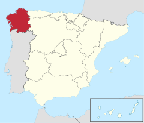
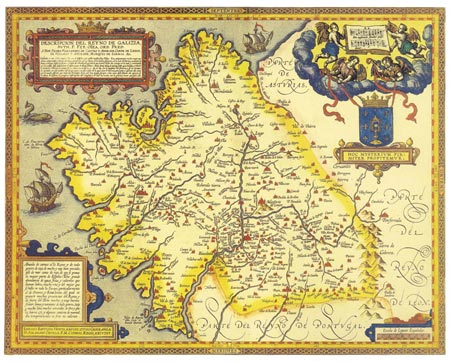

Morfología de Galicia
Características de la comunidad

Ubicación en España de la comunidad de Galicia
- A Coruña
- Lugo
- Ourense
- Pontevedra
- Cíes
- Ons
- Sávora
- Sisargas
- Malveiras

Mapa del antiguo reino de Galicia